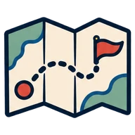
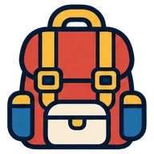
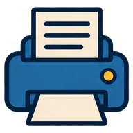
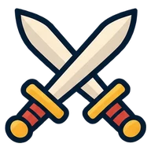

Velg reise
Tre spill med samme regler – velg hvor stor verden klassen skal reise i.
Jorda rundt
Reis hele verden rundt med 200 000 kroner. Fly mellom land, book hotell og erobre flest land.
198 land · fly Les mer her på siden ↓ 🇪🇺Europa rundt
Reis Europa rundt med 100 000 kroner. Velg mellom fly, tog og buss – og erobre flest byer.
109 byer i 46 land · fly, tog, buss Gå til Europa rundt → 🇳🇴Norge rundt
Reis Norge rundt med 80 000 kroner. Fly, tog, buss eller båt – og overnatt i telt med allemannsretten.
54 steder i 15 fylker · fly, tog, buss, båt Gå til Norge rundt →Slik fungerer spillet
Elevene jobber i grupper på 3–4. Hver gruppe har et budsjett og starter et tilfeldig sted i verden.
Tilfeldig start
Hver gruppe får et startbudsjett og havner et tilfeldig sted på jordkloden.
Book hotell
Hostell eller luksus? Et bedre hotell gir bedre søvn og mer energi til å jobbe – og frokost, flyplassbuss og wifi gir ekstra fordeler.
Fullfør reiseloggen
Fakta, kultur og et bildecollage om landet. Læreren godkjenner – og landet blir deres.
Fly videre
Direktefly er dyrt, men raskt. Billigfly har mellomlandinger – og flere quizspørsmål om bord før dere får lande.
Tjen penger
Jobb i landet (regnestykker i lokal valuta) og ta geografiquiz.
Utfordre og forsvar
Reis til en annen gruppes land og utfordre dem til duell. Et nytt land er åpent for duell i 5 dager – en nedtelling viser hvor lenge.
Kom i gang – for lærere
Alt du trenger er en e-postadresse (gjerne jobbmailen) eller en Google-konto, en skriver og en storskjerm. Oppsettet tar ca. 15 minutter.
Med Google eller e-post. Elevene trenger ingen konto.

Ett per klasse, f.eks. «7A høst».
Startbeløp, poeng og datoer. Standardverdiene fungerer fint.

Hver gruppe får startland, kode og PIN.

Innloggingskort og reiselogger til alle.
På storskjermen. Jordklode, poeng og siste nytt.

Trekk oppgave, start klokka, kår vinneren.
QR-kode under «Del med elevene».
Reiselogger havner i «Venter på deg».
Les hele veiledningen steg for steg
- Logg inn som lærer.
Trykk «Logg inn som lærer» og bruk Google eller e-post og passord. Elevene trenger ingen konto.
- Lag et spill.
Gi det et navn, f.eks. «7A høst». Ett spill per klasse eller periode.
- Still inn reglene.
Under Innstillinger: startbeløp per elev, poeng, når land låses, hvor mange jobber og quizer per dag og start- og sluttdato. Standardverdiene fungerer fint.
- Lag gruppene.
Under Grupper: navn, farge og antall elever. Hver gruppe får automatisk en startposisjon, en gruppekode og en PIN.
- Skriv ut.
«Skriv ut innloggingskort» (ett per gruppe) og «📓 Reiselogg» – den er landsnøytral, så du kopierer opp så mange du trenger.
- Vurder stengte land.
Land med krig eller uten vanlige flyreiser er stengt fra start. Du kan åpne eller stenge land under Land – en fin anledning til samtale.
- Åpne tavla på storskjermen.
Knappen «📺 Åpne tavla» på lærersiden. Tavla viser jordkloden, poengtavla, siste nytt og dueller. Du kan også vise tavla rett i lærerportalen med knappen «📺 Tavle» – med en skuff for reiselogger og dueller.
- Del lenken med elevene.
Under Oversikt → «Del med elevene» finner du elevlenken og en QR-kode. Elevene går ikke via forsiden – de bruker lenken og logger inn med gruppekode og PIN.
- Elevene reiser.
Book hotell → gjør reiseloggen → trykk «levert» → jobb, quiz eller fly videre. Under flyturen spinner de et lykkehjul og svarer på allmennkunnskap: 2 riktige for direktefly, 4 med ett stopp og 6 med to stopp. «Neste steg»-boksen øverst forteller dem alltid hva de skal gjøre.
- Godkjenn reiselogger.
Under Oversikt → «Venter på deg». Er landet ledig, blir det gruppas. Eier en annen gruppe det, blir det duell.
- Kjør dueller.
Trykk «🎲 Trekk oppgave» – oppgaven snurrer fram på tavla. Start nedtellingen, og trykk på vinneren etterpå.
- Styr spillet sammen.
Under Innstillinger → «Inviter en lærer» lager du en lenke til kolleger. De kan godkjenne, kjøre dueller og vise tavla – fint ved deling av klasser eller vikar.
- Bruk pauseknappen.
Under Innstillinger kan du sette spillet på pause – da kan ingen kjøpe noe.
- Belønn innsats.
«💰 Juster penger» på et gruppekort gir (eller trekker) penger med en begrunnelse som havner i loggen.
- Avslutt med reisedagbøker.
«📔 Rapporter» på lærersiden lager en pen reisedagbok for hver gruppe: kart med reiseruta, høydepunkter, hoteller, reisekassa og landsamlingen. Skriv ut eller lagre som PDF – fint å vise foreldre!
💡 Økonomisk læring: Det er billig å bo i Thailand, men lønna der er lav. Det er dyrt i Sveits, men lønna er høy. La elevene oppdage det selv – og snakk om det etterpå!
Ofte stilte spørsmål
Hva med personvern?
Hva trenger jeg av utstyr?
Må lærersiden eller tavla være åpen mens elevene spiller?
Er prisene ekte?
Hvor lenge varer spillet?
Koster det noe?
Klar for avreise?
Logg inn, lag gruppene og del lenken med elevene – så er dere i gang.